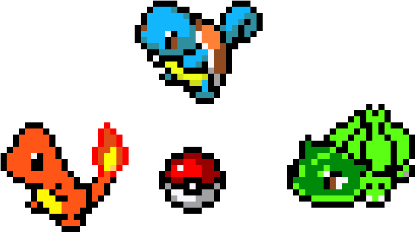

Im Gabe

an aspiring Programmer

With over 10 years of experience in high-pressure, fast-paced
environments as both a kitchen professional and a touring musician,
I’ve developed a strong foundation in leadership, multitasking, time
management, and team collaboration. These experiences have sharpened
my problem-solving abilities, attention to detail, and ability to stay
calm and effective under pressure — all traits that I’m now channeling
into my growing passion for technology.
I’m currently building my skills in web development, with a focus on
HTML, CSS, and JavaScript. I approach coding with the same creativity,
discipline, and work ethic that has guided my success on stage and in
the kitchen. As a Passionate hardworker, and a fast learner, I’m eager
to contribute to a forward-thinking tech team where I can continue to
grow and apply both my technical, creative, and interpersonal
strengths.
click below to view my Resume!
Resumewhile im new to coding, its quickly become a skill that i am proud of having. I look forward to learning and mastering more coding langauges
i was a professional guitar player for almost 10 years. Music has been a passion of mine since i was 2 years old. ive toured all over the world and played to thousands of people.